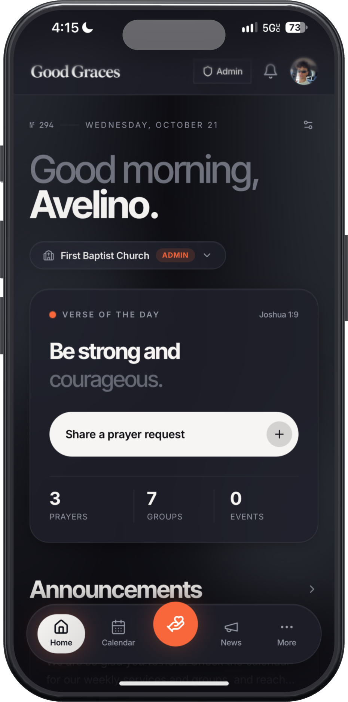
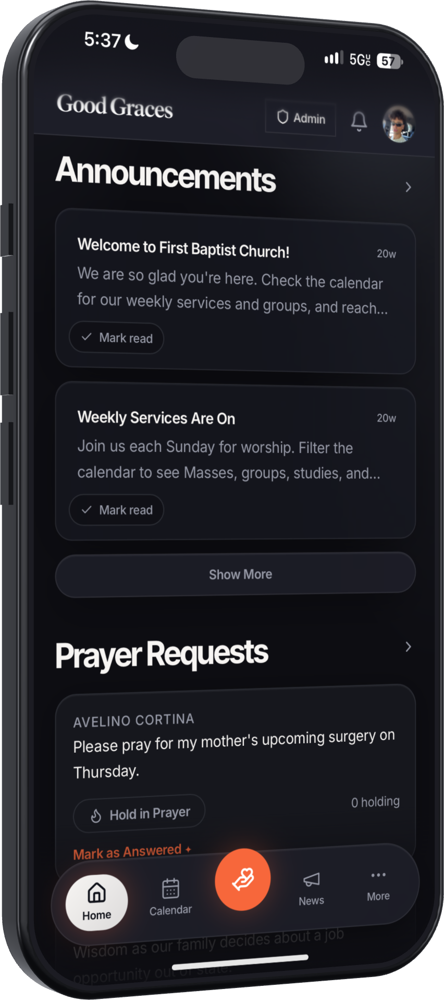
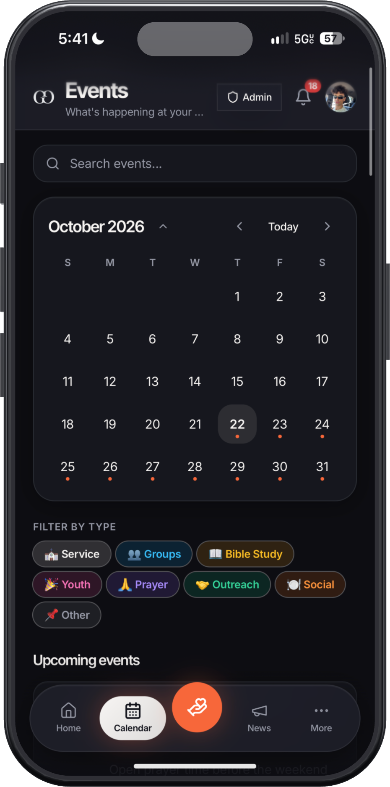
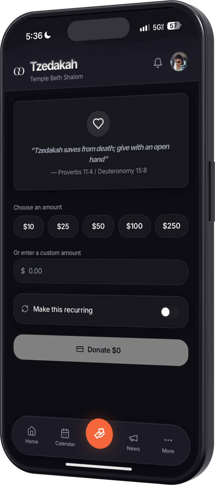
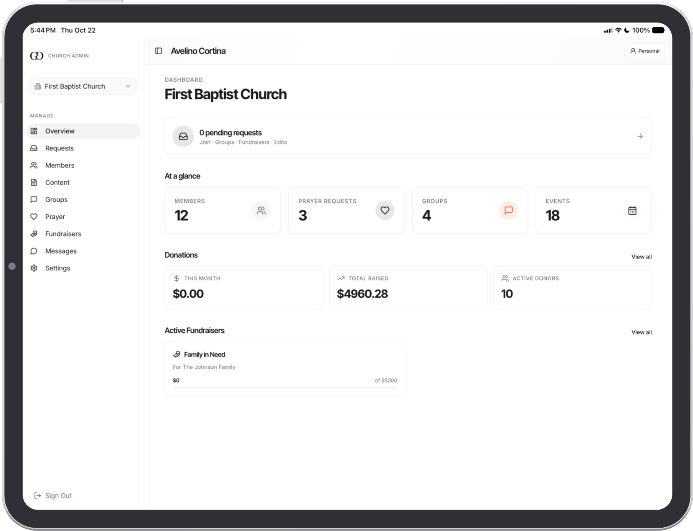

A home for your community, all week long.
Good Graces is one app for events, giving, groups and announcements, made for churches, mosques, synagogues, temples, gurdwaras and sanghas. Your members get one place to belong. Your leaders get their evenings back.
Five founding spots in the beta. Apply for one

Sunday worship. Jumu’ah. Shabbat. Aarti. Kirtan and langar. Zazen.
However your community gathers, Good Graces speaks its language.Seven tools your members ignore, or one they open.
Most communities hold their week together with a patchwork. Every new tool is one more login, one more place for news to get lost.
What most communities use today
- The group text
- The Facebook group
- The paper bulletin
- The email newsletter
- The sign-up sheet
- The giving website
- The volunteer spreadsheet
One app for members. One dashboard for leaders. Everything in between, finally in the same place.
- Announcements that actually get seen
- Every event, RSVP and reminder
- Groups that run themselves
- Giving in a few taps, one-time or recurring
Services happen once a week. Community happens in between: the study circle, the shared meal, the volunteer shift, the quiet check-in.
Good Graces gives all of it one place to live.
Everything in one place, in your own words.
Good Graces doesn’t assume a tradition. You name your services, groups and giving the way your community does, and the app follows.
Announcements
News, prayer and support requests, and updates from every group, in one feed members actually read.
Calendar
Services, classes, holidays and volunteer shifts, with RSVPs and gentle reminders.
Groups
Study circles, youth groups, choirs and committees, each with its own space and its own leaders.
Giving
One-time and recurring gifts, called what your tradition calls them: tithes, zakat, tzedakah, dakshina, dasvandh, dāna.



Made for the people who hold it together.
Clergy, administrators, volunteers and boards. Most of them already have full lives. Good Graces gives them time back.
- Share it onceOne post reaches the feed, the right groups and every phone.
- Know who’s comingRSVPs for every gathering, no sign-up sheet.
- Share the workGroup leaders and volunteers get their own access.
- See giving clearlyTotals and campaigns, ready for the board meeting.

Up and running without the headache.
You don’t need a tech volunteer. We set it up with you.
Tell us about your community
A short form about your size, your gatherings and what isn’t working today.
We build it with you
Your groups, calendar and giving, set up in your community’s own words.
Invite your members
Share a link or a QR code at your next gathering. Members join in a couple of minutes.
Priced by the size of your community.
A simple monthly plan. Small communities get the same app as large ones.
Starter
Under 150 active members$49 / mo
Growth
150 to 500 active members$149 / mo
Network
500 to 2,000 active members$349 / mo
Enterprise
Networks, councils and multiple locations$799 / mo
Starting prices. Every plan includes the member app and the admin dashboard.
“I started Good Graces because I saw how much effort goes into keeping faith communities connected, and how unnecessarily complicated that work can be. I wanted to create something that makes life easier for the people bringing these communities together.”Avelino Cortina IV, Founder
For investors
Faith communities are among the most lasting organizations people belong to. Most still run on group texts, paper bulletins and software made for a single denomination.
Good Graces is built for all of them from day one, with recurring revenue that grows with each community.
Request the investor deckQuestions
Is Good Graces tied to a religion?
No. Good Graces is independent and nondenominational. It’s made for churches, mosques, synagogues, temples, gurdwaras, sanghas and interfaith groups, and nothing in the app assumes one tradition.
Can we use our own names for things?
Yes. You decide what your services, groups and giving are called, so members see the words they already use.
Do we need someone technical to set it up?
No. We set up your community with you, and members join with a link or QR code.
How does the beta work?
We’re welcoming five founding communities and setting each one up with them personally. Apply for a spot.
How do we get started?
Request early access and tell us a little about your community. We’ll be in touch within two business days.
Bring your community home.
Tell us about your community and we’ll show you how Good Graces would work for it.
Five founding spots. Personal setup for each one.